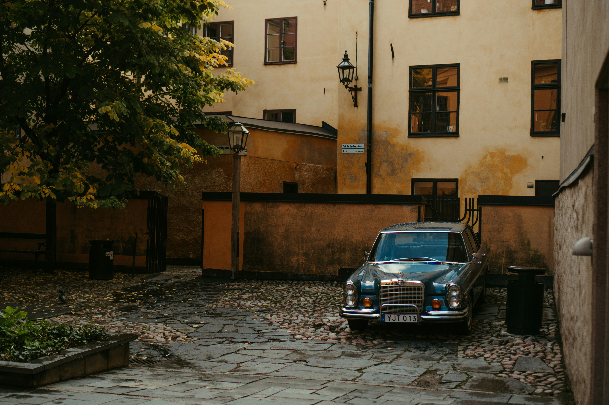

JPG Image File
This old Mercedes-Benz is parked in a peaceful courtyard with walls that are warm yellow and brown, creating a rustic and nostalgic feel. The car's retro appeal is complemented by the building in the backdrop with its straightforward, traditional construction. I have chosen this image for the same reason I chose the image on the first example, because of how easily these cars have been forgotten and only a few number of people are aware of their existence. As a car enthusiast, I would very much like to create a big community of car admirers, specially of the 20th century automobiles.
Source: Image Source